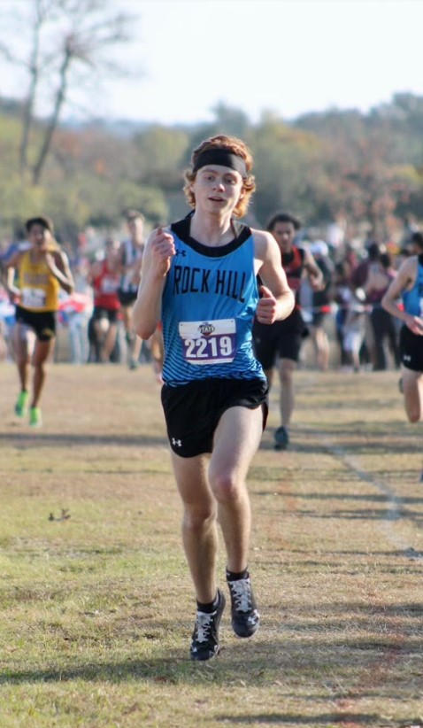
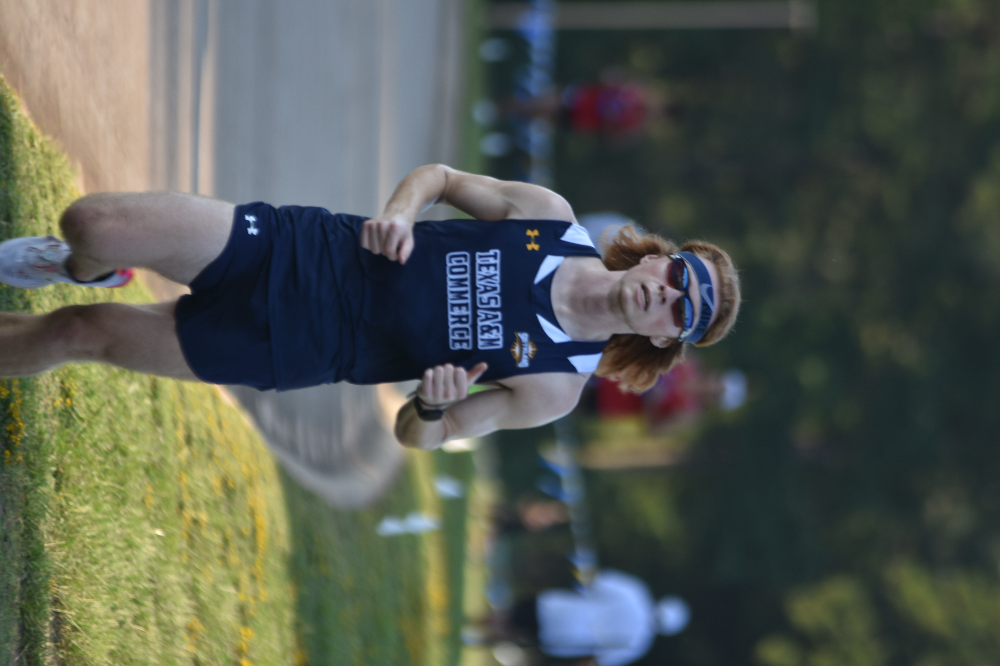

What Running Means to Me
If I spend about a third of my life working towards a career in Compputer Science, and another third simply sleeping, I think it would be safe to say that I spend that last third working to improve my physical self through running. As a result I find it rather important to highlight just how influential my time spent as a student-athlete was to making me the individual I am today.
During my time in highschool, before I even had any idea of the career I wanted to pursue once I graduated, every year I found my way to the Cross Country team. Every morning I would wake before the sun rose and travel to the school hours before any regular student and devote several hours to the act of running in the hopes that I would one day be able to make my team proud. Naturally as a Freshman, I wasn't very great by any standard. I was nowhere close to the varsity in terms of speed and I could barely hold my own against the rest of the junior varsity team. But, with a little hard work and dedication, by the time I was a senior (and a little luck due to COVID), I was able to both compete and score for my team at the state level in the state-wide championship Cross Country race.
Now, in college, I run for both the Cross Country and Track teams at A&M Commerce (Division 1) as a way to continue the passion I developed during my time in highschool, while at the same time
working towards a degree. But, running does not come without its difficulties, typically in regards to time constraints. On the average week, I spend anywhere from six
to eight hours actually, physically running, totalling up to about sixty to seventy miles when all is said and done. But, in order to prevent injury and boost my performance
I'm spending additional time properly stretching, lifting weights, and fueling my body to get me closer to my goals in the sport. The main idea I want to highlight here is that
I'm very efficient with my use of time, being able to balance the at times harsh demands of competing at the collegiate level, while at the same time excelling in my class work
and pursuing efforts that will hopefully prepare me for the workplace that lies ahead. I've always been able to blend well with any team I find myself on, and am willing to passionately
pursue any goal I set for myself and those around me. Job-wise It would be impossible for me to predict where I might someday end up. But I know that if I take with me the same
energy and enthusiasm I've cultivated for running, I know that I'll never be upset with where I'm able to go in life.

If you're interested in seeing my running activities the Strava link just below will take you to my profile. Strava itself is almost like a social media platform for runners and
has even inspired some of the programming projects I've worked on over the years.
My Strava Profile